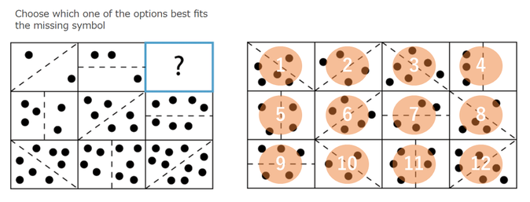

パターン認識クイズ
所要時間の目安：約7分（ウォーミングアップ1問＋本番6問、各1分）
パターン（規則性）を見つける問題に取り組んでいただきます。左側のイラストの「?」に当てはまるものを、右側の選択肢から選んでください。
- 各問の制限時間は 60秒 です。
- 「次へ」で進みます。前の問題には戻れません。
この問題はウォーミングアップ用です。採点対象外なので、気軽に解き方を確認してください。

回答方法
左側の 3×3 マスには規則が隠れています。「?」に入るものを規則から推測し、右側の選択肢（１〜１２）から答えを選んでください。
解き方のポイント（この問題の場合）
この問題には規則が2つあります。
- 規則1：線の角度 ― 各行を左から右に見ると、線が45度ずつ回転しています。
- 規則2：丸の数 ― 各行を左から右に見ると、丸の数が1つずつ増えています（2個 → 3個 → ?個）。
右側の選択肢に対応する番号（1〜12）を選んでください。
お疲れさまでした
回答を送信しました。ご協力ありがとうございました。
この画面は閉じていただいて構いません。